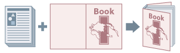

При бесшвейном скреплении страницы содержания склеиваются по переплетному краю и помещаются в обложку.

1.
Откройте вкладку [Окончательная обработка].
2.
Выберите [Бесшвейное скрепление [1-сторонняя]] или [Бесшвейное скрепление [2-сторонняя]] для [Стиль печати].
3.
Подтвердите содержание списка [Список настроек] → если необходимо внести изменения, нажмите [Настройки бесшвейного скрепления].
4.
Задайте настройки обложки в [Настройки обложки при бесшвейном скреплении].
Выберите настройки для [Формат бумаги] и [Источник бумаги].
При выполнении печати на обложке: выберите [Стиль печати] → [Макет того же размера, что обложка] → укажите [Сторона печати передней обложки]/[Сторона для печати задней обложки].
5.
Настройте [Формат страницы содержания] и [Размер окончательной обработки].
Страницы содержания печатаются на бумаге, формат которой соответствует установленному в [Формат страницы содержания], страницы обложки и страницы содержания обрезаются в соответствии с выбранным значением параметра [Размер окончательной обработки].
6.
Если нужно настроить размер окончательной обработки, нажмите [Настройка окончательной обработки] → задайте необходимые настройки → нажмите [ОК].
Положение печати на страницах содержания и страницах обложки, угол и место обрезки можно настроить с шагом 0,1 мм (0,01 дюйма).
Необходимые параметры
Машина для бесшвейного скрепления
Страницы содержания
257,0 - 320,0 мм (10,12 - 12,60 дюймов) по вертикали x 182,0 - 228,6 мм (7,17 - 9,00 дюймов) по горизонтали
(коэффициент соотношения размеров по горизонтали и вертикали: от 1:1,25 до 1:1,5)
Количество листов (до 25,0 мм (0,98 дюйма) по толщине): от 30 до 200 листов тонкой бумаги, от 10 до 200 листов обычной бумаги, от 10 до 150 листов плотной бумаги
Обложки при бесшвейном скреплении
364,0 - 487,7 мм (14,33 - 19,20 дюймов) по вертикали x 257,0 - 330,2 мм (10,12 - 13,00 дюймов) по горизонтали
Типы бумаги: обычная, переработанная 2, плотная 1-6, с односторонним покрытием 1-7, с двухсторонним покрытием 1-7, веленевая 1-2, текстурная 1-7, документная
Размер окончательной обработки
от 203,0 до 297,0 мм (7,99 - 11,69 дюймов) по вертикали (высота страницы содержания полностью или минус 6,5-39,5 мм) x от 182,0 до 216,0 мм (7,17 - 8,50 дюймов) по горизонтали (ширина страницы содержания полностью или минус 6,5-49,5 мм)
или
203,0 - 297,0 мм (7,99 - 11,69 дюймов) по вертикали x 138,0 - 216,0 мм (5,43 - 8,50 дюймов) по горизонтали
или
203,0 - 297,0 мм (7,99 - 11,69 дюймов) по вертикали x 139,7 - 216,0 мм (5,50 - 8,50 дюймов) по горизонтали